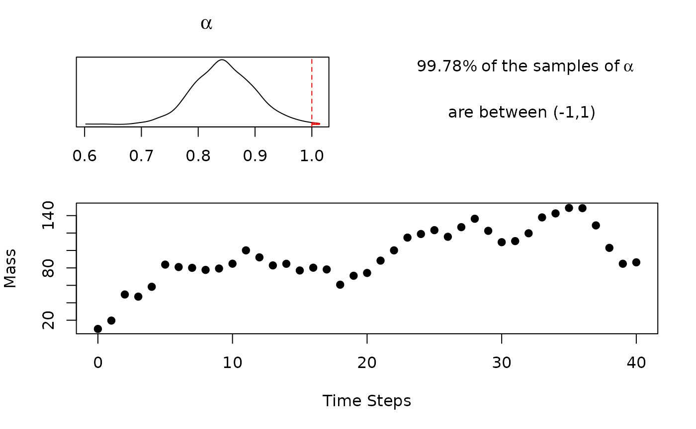

When looking over mass flow rate data from the individual stream of a process, such as the simulated data above, it is often unclear when the process achieved steady state as well as what the steady state mass flow rate is. Multiple engineers, each using different tools and reasoning, looking at this data will have different determinations. Inconsistencies in estimation can result in misleading conclusions when making process performance. Thus, there is a need to for a method consistently categorizing such data.
The ssEst function fills this gap, as well as provides quantitative information on if the stream is at steady state in the first place. The below auto-regressive model, with a lag of 1, is fit to the data.
\[ y_t = \mu + \alpha y_{t-1} + \epsilon \]
Where \(\epsilon \sim \mathcal{N}(0,\sigma^2)\). Using Bayesian inference, ssEst function generates samples from the distribution of the model parameters \(\mu\), \(\alpha\), and \(\sigma^2\). If \(|\alpha| < 1\) the model is considered stationary or mean reverting. The behavior is predictable. It is possible to calculate \(\mathbb{E}\lbrack y\rbrack\) by the following equation:
\[ \mathbb{E}\lbrack y \rbrack = \frac{\mu}{1-\phi} \]
Getting started, the data set above was generated with the following code:
y <- rep(NA, times = 41) y[1] <- 10 mu <- 20 alpha <- 0.8 sig <- 10 for(i in 2:length(y)){ y[i] <- mu + alpha * y[i-1] + rnorm(1)*sig }
Note, \(\alpha = 0.8\) implies the process is stationary. Then the ssEst function is used on these observed values.
fit1 <- ssEst(y)
Since fit1 is a "BayesMassBal" object, it can easily be passed to plot() so the output can be quickly inspected.
plot(fit1)

One can see the density obtained from the samples of \(\alpha\). It is up to the engineer to decide if there is enough evidence to deem the trend stationary. If all of the samples of \(\alpha\) obtained are in the interval (-1,1), then the distribution for the estimation of steady state will also be calculated and displayed. In this case, only a small fraction of the samples of \(\alpha\) are outside of the valid range. It is likely the chain is stationary.
To inspect \(\mathbb{E}\lbrack y \rbrack\) ssEst is rerun with the argument setting stationary = TRUE. This setting specifies a prior distribution on \(\alpha\) which forces all samples to be within (-1,1) so that the steady state mass flow rate can be calculated. Refitting and re-plotting gives:

The point \(\mathbb{E}\lbrack y \rbrack\) can then be used in a classical point mass balance, or some subset of the data can be used with the BMB() function. One way to choose the time steady state of the system has been achieved is using all data points after which the line for the Expected Steady State has been crossed. Another method would be to use a subset of samples of \(\mathbb{E} \lbrack y | \mu, \alpha \rbrack\) with the BMB function.